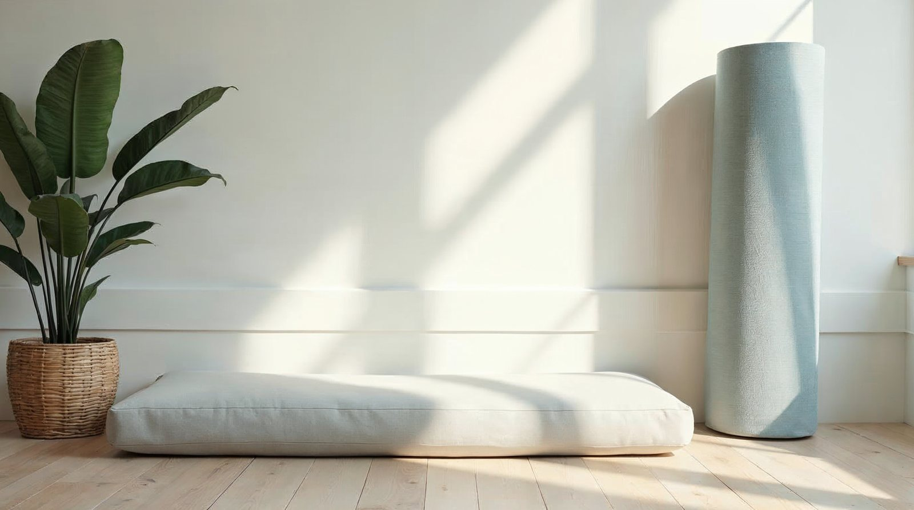
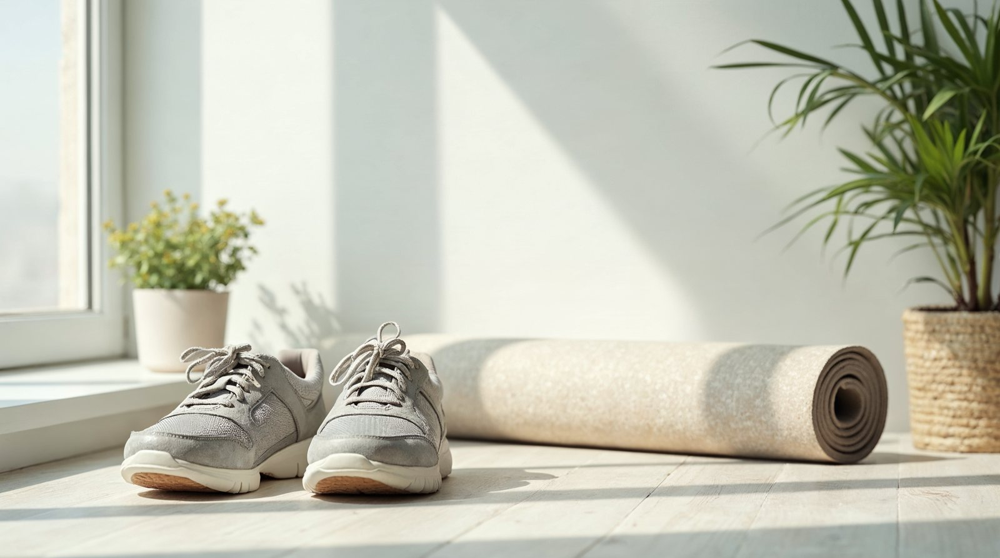
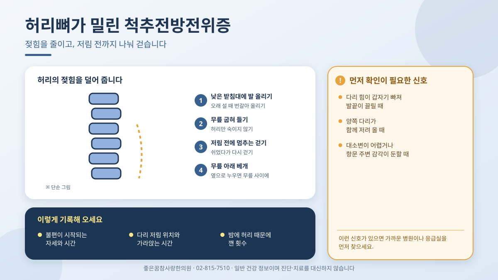

이종호 한의사 감수좋은꿈참사랑한의원 대표원장 (한의사 면허번호 19769)발행 2026-11-26 · 수정 2026-11-26
이 글의 차례
설거지를 마치고 싱크대 앞에서 허리를 펴려는데, 아래쪽이 묵직하게 걸리면서 한 번에 펴지지 않습니다. 의자에 잠깐 앉았다 일어나면 또 괜찮아집니다. 그런데 정형외과에서 사진을 찍고 나서 '척추전방전위증'이라는 말을 들었습니다. 뼈가 밀렸다니, 그럼 지금 허리가 어긋난 채로 지내고 있다는 걸까 싶어 겁이 납니다.
척추전방전위증은 허리뼈 하나가 그 아래 뼈보다 앞쪽으로 미끄러지듯 밀려나 있는 상태를 말합니다. 주로 허리 아래쪽, 네 번째와 다섯 번째 허리뼈 사이나 다섯 번째 허리뼈와 엉치뼈 사이에서 많이 봅니다. 엑스레이에서 비교적 쉽게 보이는 소견이라 검진이나 다른 이유로 사진을 찍다 알게 되는 분도 많습니다.
진료실에서 이 진단명을 가지고 오시는 분들은 대개 같은 걱정을 하십니다. 뼈가 더 밀리면 어떡하나, 운동을 하면 안 되나 하는 걱정입니다. 이름이 주는 무게가 크다 보니 움직이는 것 자체를 두려워하시는 경우가 많습니다. 그 마음이 충분히 이해됩니다.
그런데 밀린 정도가 같아도 어떤 분은 거의 불편이 없고, 어떤 분은 오래 서 있기도 힘들어하십니다. 그래서 저는 사진 속 뼈의 위치와 함께, 그 허리가 하루를 어떻게 버티고 있는지를 나란히 놓고 봅니다.
왜 허리뼈가 앞으로 밀릴까요
허리뼈는 블록처럼 쌓여 있고, 그 사이를 디스크와 뒤쪽의 작은 관절들, 인대와 근육이 붙잡고 있습니다. 이 붙잡는 힘이 약해지거나 뼈의 일부에 틈이 생기면, 위의 뼈가 아래 뼈 위에서 조금씩 앞으로 미끄러질 수 있습니다. 허리는 원래 앞으로 살짝 휘어 있어서 미끄러지는 방향도 대개 앞쪽입니다.
나이가 들면서 디스크가 얇아지고 뒤쪽 관절이 닳아 헐거워지면서 생기는 경우를 퇴행성 전방전위증이라고 부릅니다. 중년 이후에 많이 보이고, 남성보다 여성에게 더 흔하다고 알려져 있습니다. 출산과 폐경 뒤의 변화, 허리를 받치는 근육의 약해짐이 함께 관여한다고 봅니다.
다른 하나는 허리뼈 뒤쪽의 가느다란 연결 부위에 금이 가거나 떨어져 생기는 경우입니다. 이를 척추분리증이라고 하고, 여기서 뼈가 밀리면 분리성 전방전위증이라고 부릅니다. 어릴 때 허리를 많이 젖히는 운동을 했던 분에게서 보이기도 하고, 본인은 모른 채 지내다 어른이 되어 발견하기도 합니다.
한의학에서는 허리를 오래 받쳐 주는 힘을 근골의 힘, 그리고 신(腎)의 기운과 연결해 생각해 왔습니다. 나이가 들고 피로가 쌓이며 그 힘이 떨어지면 허리가 쉽게 무거워지고 오래 버티기 어려워진다고 보았습니다. 그래서 저는 뼈의 자리만 보지 않고 몸 전체의 피로와 회복력을 함께 여쭙습니다.
결과지의 단계와 내 허리의 불편
결과지에는 흔히 '1단계', '2단계'처럼 밀린 정도가 적혀 있습니다. 아래 뼈의 앞뒤 길이를 네 칸으로 나눠, 위의 뼈가 몇 칸쯤 밀렸는지를 나타내는 방식입니다. 진료 현장에서 만나는 분들은 대부분 1단계나 2단계입니다.
단계가 낮다고 불편이 적은 것도, 단계가 높다고 늘 심한 것도 아닙니다. 불편은 밀린 거리보다 그 자리가 얼마나 흔들리는지, 주변 신경이 지나는 길이 얼마나 좁아졌는지, 허리를 받치는 근육이 얼마나 지쳐 있는지에 더 많이 좌우됩니다.
그래서 정형외과에서는 서서 찍은 사진이나 허리를 굽히고 젖힌 상태의 사진을 비교해 흔들림이 있는지 보기도 하고, 다리 증상이 있으면 MRI로 신경의 길을 살피기도 합니다. 어떤 검사를 받았는지 결과지에 함께 적혀 있으면 진료실에서도 이야기가 훨씬 수월해집니다.
이런 모양으로 불편이 나타납니다
가장 흔한 것은 허리 아래쪽의 묵직함입니다. 아침보다 오후로 갈수록, 오래 서 있거나 걸을수록 무거워지고, 앉거나 허리를 살짝 앞으로 숙이면 편해지는 경우가 많습니다. 허리를 뒤로 젖히는 동작이 특히 불편하다는 분도 많습니다.
엉덩이나 허벅지 뒤가 당기는 느낌이 함께 오기도 합니다. 허벅지 뒤 근육이 유난히 짧고 단단해져 있는 경우가 흔한데, 밀린 허리를 근육이 붙잡느라 애쓰는 모습으로 이해하기도 합니다.
다리로 저림이 내려오는 분도 계십니다. 밀린 자리에서 신경이 지나는 길이 좁아지면 걸을 때 다리가 저리거나 무거워지고, 잠깐 앉아 쉬면 다시 걸을 수 있게 되는 모습이 나타납니다. 이런 모양은 척추관 협착증과 겹쳐 함께 보는 경우가 많습니다.
비슷해 보이지만 다르게 살펴야 하는 경우
허리를 숙일 때 더 아프고, 기침이나 재채기에 다리까지 찌릿하다면 디스크 쪽을 먼저 생각합니다. 전방전위증은 대개 젖히거나 오래 서 있을 때 불편하고, 디스크는 숙이거나 오래 앉아 있을 때 불편한 경우가 많아 방향이 조금 다릅니다. 물론 둘이 함께 있는 분도 있습니다.
걸으면 다리가 저려 자꾸 쉬어야 한다면 협착증과 겹쳐 있는지를 봅니다. 쉬면 나아지는 다리 저림이라는 점은 비슷하지만, 혈관이 좁아져 다리가 아픈 경우도 비슷한 모양으로 나타날 수 있어 발의 맥과 피부 색, 온도를 함께 확인합니다.
엉덩이 한쪽 깊은 곳이 아프고 오래 앉아 있을 때 심해진다면 엉덩이 근육 쪽 문제나 엉치 관절 쪽을 함께 생각합니다. 허리 아래쪽 통증이라고 해도 아픈 손가락이 가리키는 자리가 조금씩 다르니, 진료실에서는 가장 아픈 곳을 직접 짚어 달라고 말씀드립니다.
하루의 자세가 허리에 남기는 것
진료실에서 하루를 여쭤 보면, 불편이 커지는 시간대가 꽤 뚜렷하게 보이는 경우가 많습니다. 아침에는 괜찮다가 점심 무렵 서서 일하는 시간이 길어지면 무거워지고, 저녁 설거지 때 가장 힘들다는 분이 많습니다. 허리를 받치던 근육이 하루 동안 조금씩 지쳐 가는 흐름으로 보입니다.
서 있을 때 배를 앞으로 내밀고 엉덩이를 뒤로 빼는 자세가 몸에 익은 분도 많습니다. 이 자세는 허리 아래쪽을 더 젖히게 만들어, 밀린 자리 뒤쪽 관절에 부담을 보탭니다. 거울 앞에서 옆모습을 한번 보시면 내 허리가 얼마나 휘어 있는지 짐작하실 수 있습니다.
반대로 하루 종일 앉아 있는 분은 엉덩이와 허벅지 앞쪽 근육이 짧아지고, 일어설 때 허리가 한 번에 펴지지 않는다고 말씀하십니다. 앉는 시간이 긴 분은 한 시간에 한 번쯤 일어나 몇 걸음 걷고, 서 있는 시간이 긴 분은 중간중간 의자에 앉아 허리를 쉬게 해 주는 것만으로도 저녁의 무게가 달라지는 경우가 있습니다.
신발도 함께 봅니다. 굽이 높은 신발은 몸의 무게중심을 앞으로 보내 허리를 더 젖히게 만들기 쉽습니다. 오래 걷거나 서 있는 날에는 굽이 낮고 바닥이 너무 얇지 않은 신발을 골라 보시길 권합니다.
먼저 이렇게 여쭙니다
결과지를 함께 보면서, 저는 대략 이런 순서로 여쭙니다.
- 언제 어디서 진단을 받으셨고, 몇 단계라고 들으셨나요? 흔들림이 있다는 말도 있었나요?
- 오래 서 있을 때, 걸을 때, 앉아 있을 때, 누워 있을 때 중 언제가 가장 불편한가요?
- 허리를 숙일 때와 젖힐 때 중 어느 쪽이 더 불편한가요?
- 다리로 저림이 내려온다면 어디까지, 몇 분쯤 걸으면 시작되나요?
- 드시는 약이 있다면 무엇이고, 주사나 시술을 받으신 적이 있나요?
- 하루에 서 있는 시간과 앉아 있는 시간은 대략 어떻게 되나요?
다 기억하지 못하셔도 괜찮습니다. 결과지와 드시는 약 이름만 챙겨 오셔도 이야기를 시작하기에 충분합니다.

일상에서 먼저 해 볼 수 있는 것
진단을 받고 나면 움직임을 확 줄이는 분이 많습니다. 하지만 허리를 아예 쓰지 않으면 허리를 받치는 근육이 더 약해지고, 그만큼 뼈와 인대가 버텨야 할 몫이 커집니다. 저는 '피할 동작'과 '이어 갈 움직임'을 나눠서 생각해 보시라고 권합니다.
- 오래 서 있어야 할 때는 낮은 받침대에 한쪽 발을 번갈아 올려 허리의 젖힘을 줄이기
- 허리를 뒤로 크게 젖히는 스트레칭이나 동작은 불편이 크면 잠시 미루기
- 바닥의 물건은 허리만 숙이지 말고 무릎을 굽혀 몸 가까이에서 들기
- 걷기는 저림이 오기 전에 멈추는 거리로 시작해, 쉬었다가 다시 걷는 식으로 이어 가기
- 잘 때는 무릎 아래에 베개를 두거나, 옆으로 누워 무릎 사이에 베개를 끼워 보기
- 허벅지 뒤가 단단하다면 누워서 한쪽 다리를 수건으로 걸어 천천히 늘이기
복부와 엉덩이 근육을 깨워 주는 가벼운 운동도 도움이 되는 경우가 많습니다. 누워서 무릎을 세우고 배꼽을 살짝 바닥 쪽으로 당기며 숨을 고르는 정도부터 시작해 보세요. 운동의 종류와 강도는 다니시는 정형외과나 재활 쪽 안내를 우선으로 하고, 통증이 커지는 동작은 멈추시면 됩니다.
체중이 늘면 허리 아래쪽이 받는 부담도 함께 커집니다. 급하게 빼려 애쓰기보다 저녁 식사 시각과 간식을 먼저 정리해 보시길 권합니다. 허리 통증과 잠, 식사는 생각보다 가깝게 붙어 있습니다.
한의원에서 함께 살필 수 있는 경우
- 진단은 받았지만 지금 당장 시술이나 수술이 필요한 단계는 아니라고 들은 경우
- 오래 서 있거나 걸으면 허리 아래와 엉덩이가 무거워 일상이 불편한 경우
- 허벅지 뒤와 엉덩이 근육이 늘 단단하게 뭉쳐 있는 경우
- 허리 불편 때문에 잠을 설치고, 피로와 소화까지 함께 흔들리는 경우
좋은꿈참사랑한의원에 처음 오시면 맥부터 짚고, 짚으면서 불편한 자세와 하루를 여쭙습니다. 그다음 허리를 숙이고 젖히는 범위, 다리를 들어 올릴 때의 당김, 엉덩이와 허벅지 근육의 긴장을 직접 확인합니다. 필요하면 초음파로 근육과 힘줄 상태를 함께 봅니다.
그 뒤 진찰한 내용을 바탕으로 침, 약침, 추나, 온열 장비를 이용한 관리, 한약 상담 가운데 지금 상태에 맞는 것을 정합니다. 추나를 고려할 때는 결과지에 적힌 흔들림 여부를 꼭 확인하고, 밀린 자리에 무리가 가지 않는 방식으로 범위를 정합니다. 정형외과에서 받고 계신 약과 진료는 그대로 이어 가시면서 함께 살피는 것을 기본으로 합니다.
다시 오시면 맥을 다시 짚으며 지난번 정한 것 하나가 실제로 어땠는지부터 이어서 듣습니다. 서 있는 자세를 바꿔 보기로 했다면 하루에 몇 번 떠올렸는지, 걷는 거리를 나눠 보기로 했다면 어디까지 걸었는지를 여쭙습니다.
이렇게 기록해 오시면 상담이 쉬워집니다
허리의 불편은 진료실에 앉아 있을 때보다 하루를 보내는 동안 더 잘 드러납니다. 2주 정도만 짧게 적어 보세요.
- 엑스레이나 MRI 결과지, 들으신 단계와 흔들림 여부
- 불편이 시작되는 자세와 시간(서서 몇 분, 걸어서 몇 분)
- 다리 저림이 있다면 내려오는 위치와 쉬면 가라앉는 데 걸리는 시간
- 드시는 진통제나 근육 이완제, 받으신 주사나 시술
- 잠든 시각과 깬 시각, 밤에 허리 때문에 깬 횟수
빠진 날이 있어도 괜찮습니다. 적어 오신 줄 가운데 유난히 불편했던 날부터 함께 들여다보겠습니다.

밀린 허리와 오래 함께 지내려면
'뼈가 밀렸다'는 말은 듣는 순간 마음을 크게 흔듭니다. 하지만 많은 분들이 그 허리와 함께 일하고, 걷고, 여행하며 지내십니다. 밀린 거리 하나보다 그 자리를 받쳐 주는 근육과 하루의 자세가 불편의 크기를 더 많이 정하는 경우가 많습니다.
허리가 불편한 날이 이어지면 마음도 함께 움츠러듭니다. 혹시 더 밀릴까 싶어 외출을 줄이고, 그러다 보니 몸은 더 굳고 잠도 얕아집니다. 저는 이 고리를 조금씩 풀어 가는 것을 진료의 큰 몫으로 생각합니다. 겁을 덜어 내고, 할 수 있는 움직임을 하나씩 늘려 가는 것입니다.
그러니 이번 주에는 하나만 골라 보세요. 싱크대 앞에 발 받침 하나 두기, 걷는 길을 두 번에 나눠 걷기, 잠들 때 무릎 아래 베개 하나. 다음에 오시면 그 하나가 허리에 어떻게 닿았는지부터 여쭙겠습니다.
이런 증상은 먼저 확인이 필요합니다
- 다리 힘이 갑자기 빠져 발끝이 끌리거나, 양쪽 다리가 함께 저려 오는 경우
- 대소변을 보기 어렵거나 참기 어려워진 경우, 또는 항문·사타구니 주변 감각이 둔해진 경우
이런 신호가 있으면 한의원보다 가까운 병원이나 응급실을 먼저 찾으세요.
함께 읽으면 좋은 글
- 걸으면 다리가 저려 자꾸 쉬어야 하는 척추관 협착증은 어떻게 살피나요?
- 허리 디스크 초기 신호와 다리 저림은 어떻게 구분하나요?
- 허리가 앞으로 많이 휜 느낌일 때는 자세를 어떻게 점검하나요?
- 하루 종일 서서 일하면 저녁마다 허리가 묵직할 때 어떻게 살피나요?
- 근육이 아픈 것인지 관절이 아픈 것인지 어떻게 짚어서 말하나요?

여쭙는 것
- 언제 어디서 진단을 받으셨고, 몇 단계라고 들으셨나요? 흔들림이 있다는 말도 있었나요?
- 오래 서 있을 때, 걸을 때, 앉아 있을 때, 누워 있을 때 중 언제가 가장 불편한…
- 허리를 숙일 때와 젖힐 때 중 어느 쪽이 더 불편한가요?
생활에서 해 볼 것
- 오래 서 있어야 할 때는 낮은 받침대에 한쪽 발을 번갈아 올려 허리의 젖힘을 줄이기
- 허리를 뒤로 크게 젖히는 스트레칭이나 동작은 불편이 크면 잠시 미루기
- 바닥의 물건은 허리만 숙이지 말고 무릎을 굽혀 몸 가까이에서 들기
한의원에서 함께 살필 것
- 진단은 받았지만 지금 당장 시술이나 수술이 필요한 단계는 아니라고 들은 경우
- 오래 서 있거나 걸으면 허리 아래와 엉덩이가 무거워 일상이 불편한 경우
- 허벅지 뒤와 엉덩이 근육이 늘 단단하게 뭉쳐 있는 경우
먼저 확인이 필요한 신호
- 다리 힘이 갑자기 빠져 발끝이 끌리거나, 양쪽 다리가 함께 저려 오는 경우
- 대소변을 보기 어렵거나 참기 어려워진 경우, 또는 항문·사타구니 주변 감각이 둔해진…
한눈에 보는 표
| 구분 | 핵심 |
|---|---|
| 여쭙는 것 | 언제 어디서 진단을 받으셨고, 몇 단계라고 들으셨나요? 흔들림이 있다는 말도 있었나요? 오래 서 있을 때, 걸을 때, 앉아 있을 때, 누워 있을 때 중 언제가 가장 불편한가요? |
| 생활에서 해 볼 것 | 오래 서 있어야 할 때는 낮은 받침대에 한쪽 발을 번갈아 올려 허리의 젖힘을 줄이기 허리를 뒤로 크게 젖히는 스트레칭이나 동작은 불편이 크면 잠시 미루기 |
| 한의원에서 함께 살필 것 | 진단은 받았지만 지금 당장 시술이나 수술이 필요한 단계는 아니라고 들은 경우 오래 서 있거나 걸으면 허리 아래와 엉덩이가 무거워 일상이 불편한 경우 |
| 먼저 확인이 필요한 신호 | 다리 힘이 갑자기 빠져 발끝이 끌리거나, 양쪽 다리가 함께 저려 오는 경우 대소변을 보기 어렵거나 참기 어려워진 경우, 또는 항문·사타구니 주변 감각이 둔해진 경우 |
자주 묻는 질문
척추전방전위증이 있으면 운동을 하면 안 되나요?
운동을 모두 멈추기보다 허리를 크게 젖히거나 무겁게 비트는 동작을 조심하고, 걷기나 복부·엉덩이 근육을 깨우는 가벼운 운동부터 이어 가는 경우가 많습니다. 종류와 강도는 다니시는 정형외과 안내를 우선으로 정하세요.
밀린 뼈를 추나로 제자리에 되돌릴 수 있나요?
추나는 밀린 뼈를 맞춰 넣는 방법이라기보다, 주변 관절과 근육의 긴장을 살펴 움직임을 편하게 하는 쪽으로 씁니다. 흔들림이 있는지 결과지를 먼저 확인하고, 할지 말지와 범위를 진찰 뒤에 정합니다.
시간이 지나면 점점 더 밀리나요?
진행 여부는 사람마다 다르고, 오래 비슷한 상태로 지내는 분도 많습니다. 정기적으로 사진을 다시 볼지는 정형외과에서 안내받은 주기를 따르시고, 다리 증상이 새로 생기면 그때 함께 확인하시면 됩니다.
정형외과 약을 먹고 있는데 한의원 진료를 같이 받아도 되나요?
드시는 약과 받으신 시술을 알려 주시면 그에 맞춰 진료 방향을 정합니다. 처방받은 약은 의사와 상의 없이 멈추지 않으시길 권합니다.
허리 보호대는 계속 차고 있어야 하나요?
오래 서 있거나 무거운 일을 하는 동안 잠깐 쓰는 것은 도움이 될 수 있지만, 하루 종일 차고 지내면 허리를 받치는 근육이 쉬어 버릴 수 있습니다. 차는 시간을 정해 두고, 그 밖의 시간에는 근육을 쓰는 쪽으로 이어 가시길 권합니다.
좋은꿈참사랑한의원은 재진 때 지난번 이야기부터 이어서 여쭙니다. 진료시간과 예약은 오시는 길에서 확인하세요.
어디서 상담받을 수 있나요?
좋은꿈참사랑한의원은 서울 동작구 만양로2길 2 신성빌딩 3층·5층(서울 동작구 상도동, 7호선 상도역 3번 출구 근처)에 있습니다. 한의사 3명(이종호 대표원장, 조영기 수석진료원장, 정원영 진료원장)이 진료합니다. 진료시간은 평일 09:30~20:00(점심 13:00~14:00), 토·일·공휴일 09:30~15:00이며, 방문 전 전화로 확인을 권합니다. 예약은 네이버 예약, 카카오톡 상담, 전화 02-815-7510로 받습니다.
이 글은 일반적인 건강 정보이며 개인의 진단이나 치료를 대신하지 않습니다. 증상이 있거나 복용 중인 약이 있다면 진료를 통해 확인하세요. 치료 효과는 개인마다 다를 수 있습니다.
작성 기준: 일반적으로 알려져 있는 건강 정보를 참고해 정리했습니다(대표원장 감수). 증상 기록은 1~2주 동안 하루 1회, 비슷한 시간에 적어 오시면 지난 상태와 비교하기 쉽습니다.